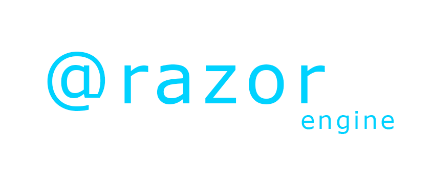

Work.
Resume.
Read more about my coding history as well as review project descriptions from my professional history.
SSIS.
Professional experience creating and running daily jobs from C# SSIS projects. Includes use of Dapper, Entity Framework, Newtonsoft and more.
Framework and API.
Created and modified several frameworks for use at a professional level. Additionally, I have experience creating APIs using these frameworks, and using
external APIs to create frameworks.
Web Development.
Professional, academic and personal experience creating and maintaining various types of websites for myself, for clients, and for friends.
The vast majority of my front end experience is in hand-coded, Bootstrap 4 pages, although I do have professional experience using WordPress and Squarespace as well.
With Bootstrap, I use custom SASS as well as adding in a CSS stylesheet for easy modification. I development using HTML 5, as well as JQuery and JavaScript.
In conjunction with backend development, I am also proficient with AJAX and JSON.
My experience with backend development primarily includes .NET applications. These applications communicate with frameworks and APIs, and will typically add,
update, display and delete data using Entity Framework connections to SQL Server. I have created stored procedures and simple SQL queries to accomodate this.
Additionally, I am highly experienced with MVC and Razor syntax.
SQL & SQL Server.
Due to my frequent creation of SSIS projects and .Net applications, it became necessary for me to study and implement SQL into my work. Although I would never claim to be
a SQL expert, I have a solid foundation in the language and can develop stored procedures to meet business needs.
VBA and Excel.
My first programming language was VBA, as I found an extensive need for it at Best Buy. I frequently found myself being forced to spend hours pulling, comparing, and condensing
reports provided in Excel by corporate. One day, I thought to myself, "there must be a better way!" This was the beginning of my programming career, as I quickly fell in love with
VBA and knew I needed more.
Websites.
Web.
Diver's Alert Network.
Diver's Alert Network (DAN) is a non profit organization that is dedicated to making SCUBA diving as safe as possible.
Although DAN's website was around long before I was, I have created and maintained several of the web pages.
Checkout an example of a page that I recently created.
Hickory Tech Solutions.
Hickory Tech Solutions was a project that started in Del Rio, TX in order to help educate
the small city on technology. Since most residents didn't have access to computer education, Hickory Tech Solutions
offered countless trainings and services to make technology easy. I created and maintained the entirety of the website.
Kaplan Construction.
Kaplan Construction is an popular construction company in my home town of Long Beach, CA. Many years ago,
I offered to start working on their website and have since maintained the website and client communication.
Visit the primary Squarespace website I have been maintaining for several years.
D&D Shops.
We all have to have a little fun in our lives. For me, that was building a website dedicated to
showing D&D 'products' for in-game 'purchases'. My players can have a laugh as they browse the shops without having to
flip through pages and pages of guides to find what they want. It started as a parody 90's website but is slowly being upgraded
to a more modern feel.
Tools.
Languages.
C#, HTML, CSS, jQuery, JavaScript, VBA, VB, SQL, JSON, AJAX
Skills and Tools.
ASP.Net, MVC, Bootstrap 4, SSIS, SQL Server, Visual Studio, Notepad++, GitHub, Azure, MS Office
ToolBox.





Let's Talk!
RenHickory
@Gmail.com
@Gmail.com
As a programmer who is just beginning my professional journey, I am passionate about what I do and am always ready for the next challenge.
Despite not having the years of experience that some may have, I am desperate to learn more and spend the vast majority of my free time
working on web development projects, finding new tools, reading interesting articles, or taking computer science classes.
If you take a chance with me, you can expect a motivated individual who doesn't believe in the phrase, "that's not my job".
Let's build something together!
Ren Meredith
Raleigh-Durham Area, NC
Raleigh-Durham Area, NC